VISNAV
Two haptic wristbands that tell a visually impaired sailor which way to steer.
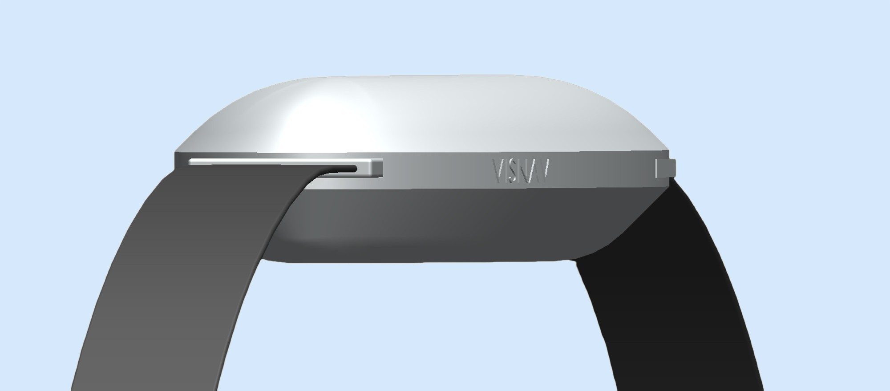
- Type
- Wearable and app
- Context
- Final-year project, Sussex
- Users
- Visually impaired sailors
- Status
- In progress
Holding a course without sight
Visually impaired sailors rely on a sighted crew calling out course corrections. Holding a heading, knowing when to tack and reading wind shifts are the hardest parts.
Spoken calls fail exactly when they matter most. Sailors told me they lose them "when it's windy or I've got a hood on to stay dry", or "just windy or when people are talking".
Driven by the people who would use it
I didn't want to guess what visually impaired sailors need, so every decision in VisNav goes back to them and the people who sail with them.
What the questionnaire found. Visually impaired sailors often sail upwind as well as anyone, but they find it hard to hold a course, know when to tack or gybe and read wind shifts. Most rely on a constant stream of spoken updates from the crew. The most requested solution was vibration or haptics in place of constant speech.
What Pete told me. Today's methods are "left a bit, right a bit" and "one spoke to port". Audio compasses exist, but he said they "vary considerably and can be really annoying to listen to".
What the sailors told me. Spoken instructions get lost in wind and noise, and one sailor described relying on audio as "a bit of an audio overload". Before building anything, I tested the idea by touch with a sailor who is both blind and deaf: a hand on the left shoulder meant steer left, right shoulder steer right, middle of the back on course. They picked it up straight away.
To keep these needs in front of me while designing, I built two personas from the interviews and Blind Sailing Week. Alex, 42, is a blind helm who wants to know when she is off course without waiting for a call; she sails in gloves and takes her watch off to fit them. Sam, 55, is a Yachtmaster who coaches visually impaired crew and is tired of repeating "come up, too far" over the engine and the wind.
Two findings shaped the band most. Gloves and jacket cuffs decide where a device can be worn, and the harder problem is oversteering through tacks, not slowly drifting off course.
Three ways to wear it
I sketched three wristband concepts, each answering the glove and cuff problem differently, then developed the pod that holds the electronics.
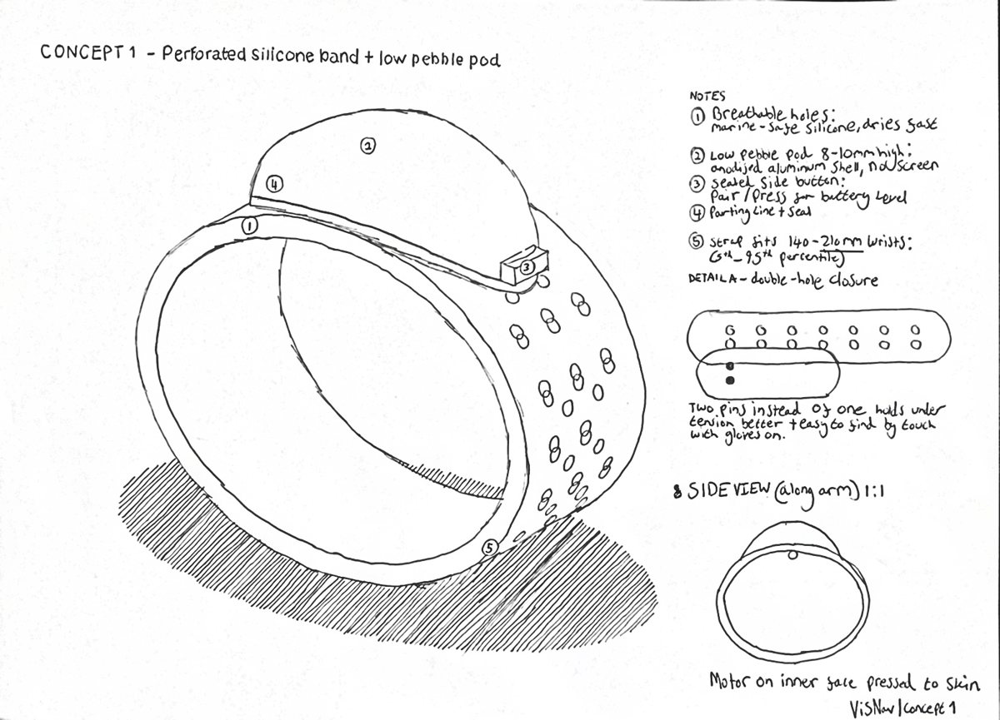
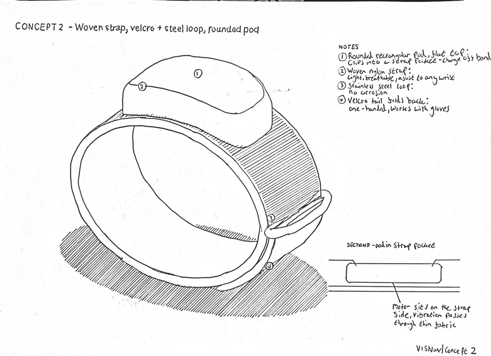
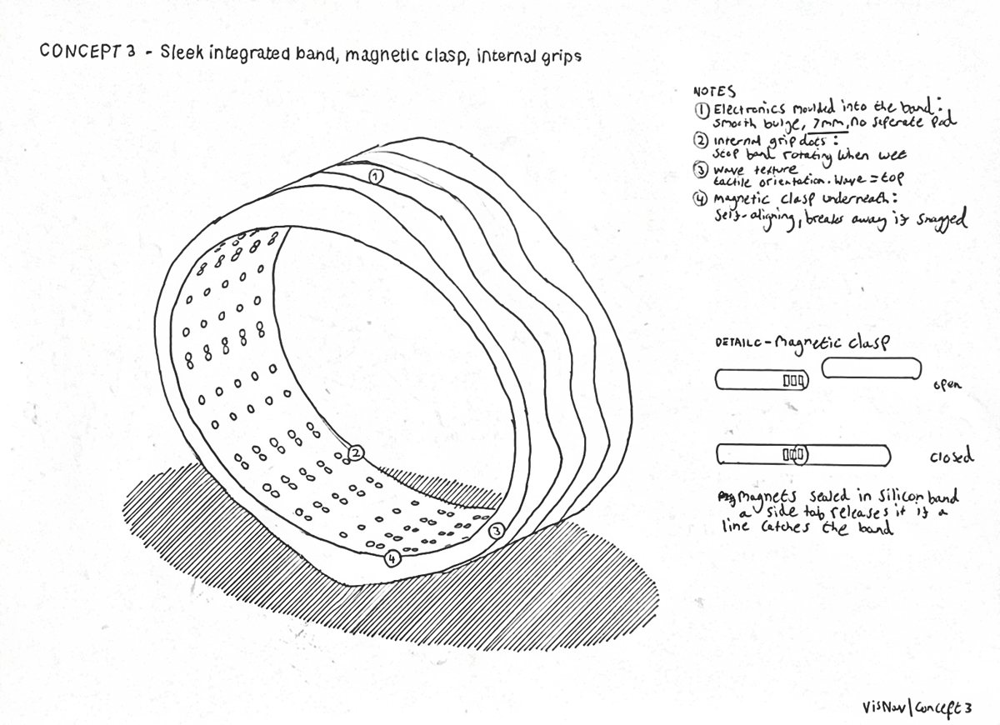
Pod development
The pod holds a vibration motor, a small battery and a Bluetooth chip. The target from my form study: under 20 mm high and 40 to 50 mm long, with nothing to catch on clothing.
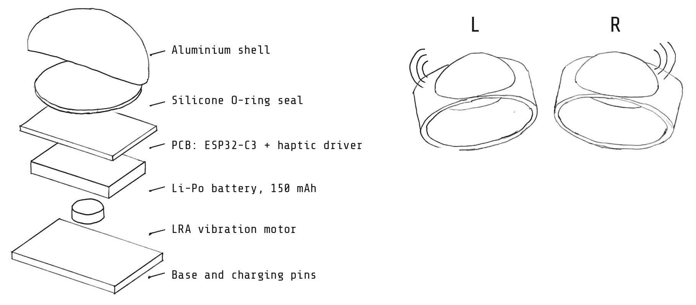
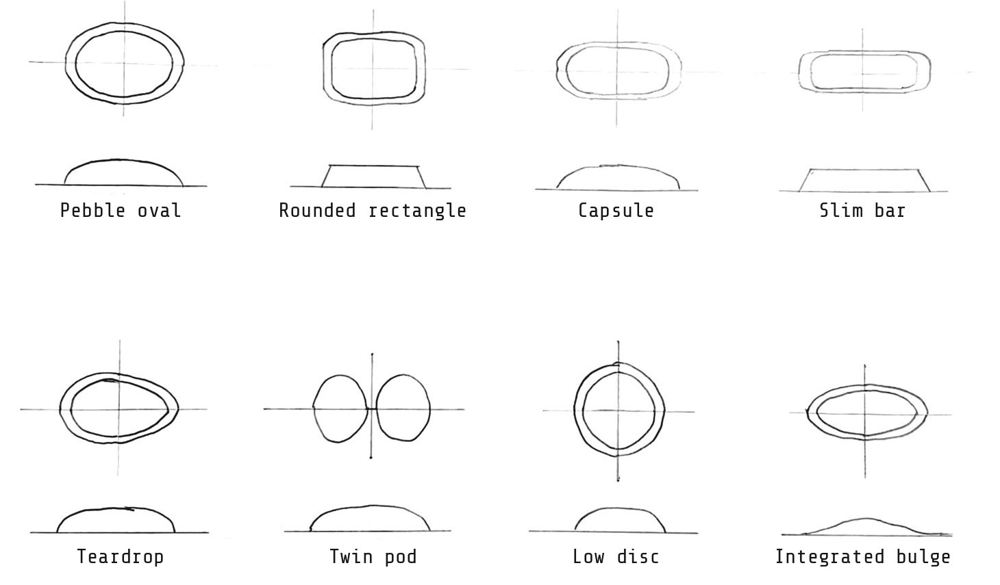
Placement test
3D printed pod on an elastic strap, self-tested in three positions and rated out of 10 for how natural and comfortable they felt.
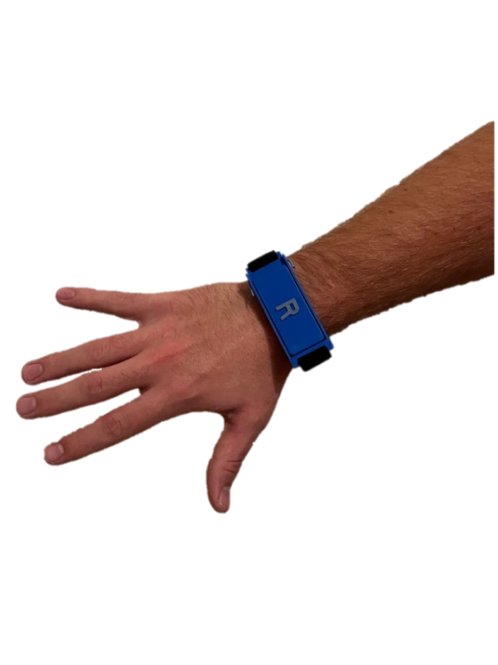
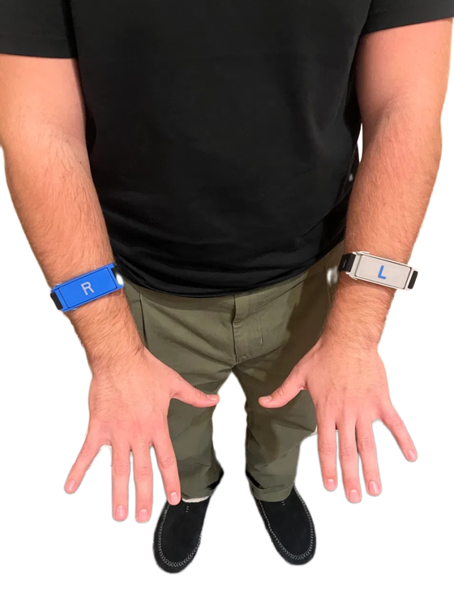
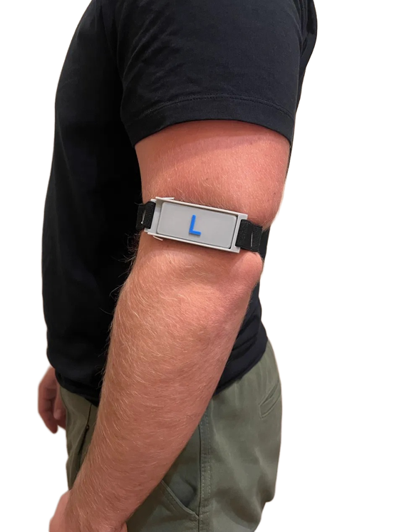
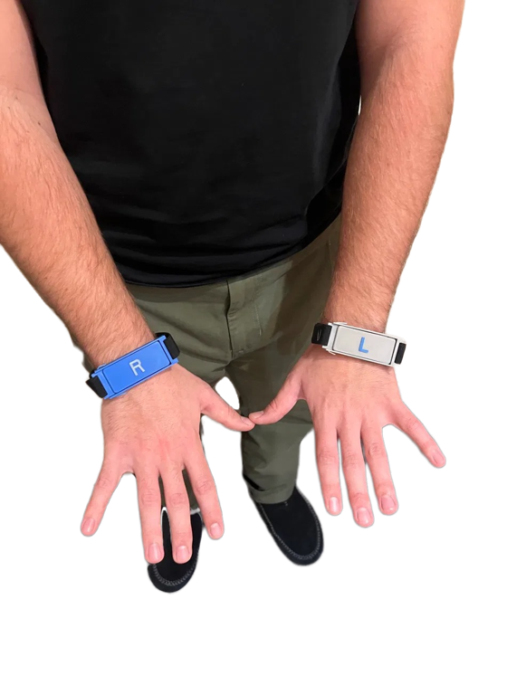
App development for visually impaired sailors
The app is fully audio based. It speaks every screen, confirms every button press out loud and accepts voice input, and it works alongside the phone's own VoiceOver. A sailor never has to read the screen to use it. Once a heading is set, the wristbands take over and the phone can stay in a pocket.
For sailors with some sight, the screen still has to be readable on the water. That meant researching colour and contrast.
When at sea the glare from the sun and the water often washes out low contrast colours, which makes a high contrast colour palette important, especially for visually impaired sailors.
Based on Mather (2024), InFocus Charity
Do
Do not
How I put this into the app.
- Every screen is read aloud by VoiceOver, and the bands confirm they are connected with a double buzz.
- Instructions and buttons use high-contrast pairings: navy on white, white on navy, black on yellow. The chart behind them is for crew and partially sighted sailors, not the main cue.
- Buttons are 20 mm or larger for wet, gloved taps: tap for 1°, hold for 10°.
- A distinct buzz warns when the signal is lost, so silence only ever means on course.
- The app follows the phone's high-contrast, large-text and visibility settings, so it stays readable on a moving boat in bright sun.
The layout is inspired by Apple Maps: the chart fills the screen and one panel slides up from the bottom with only what you need. It is clean, and familiar to VoiceOver users.
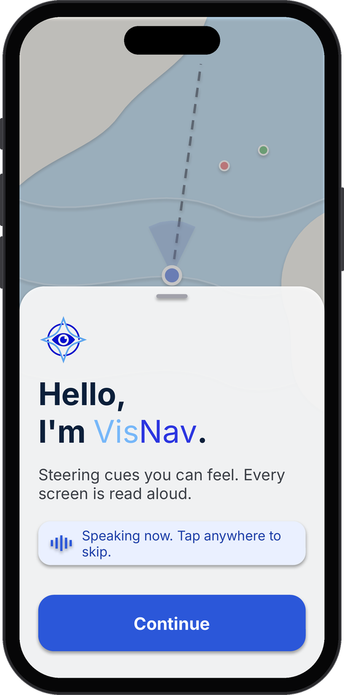
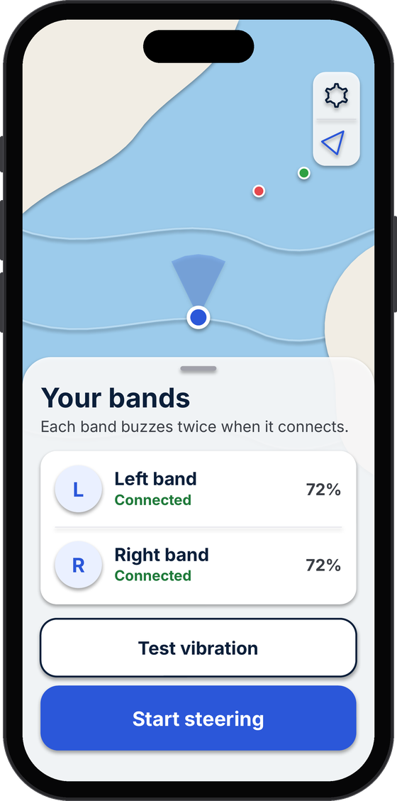
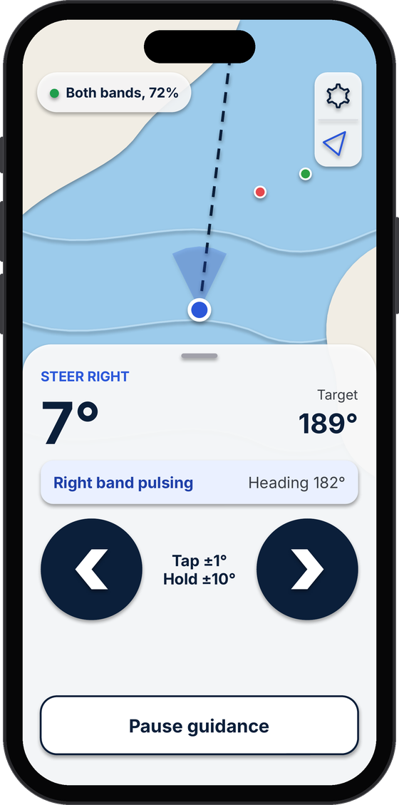
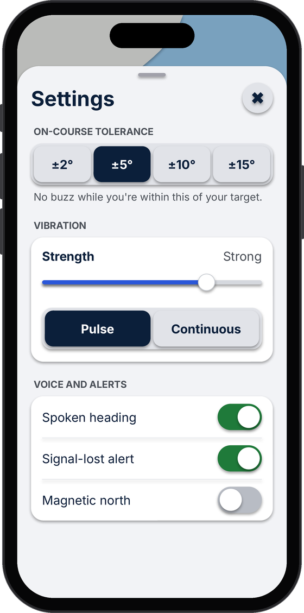
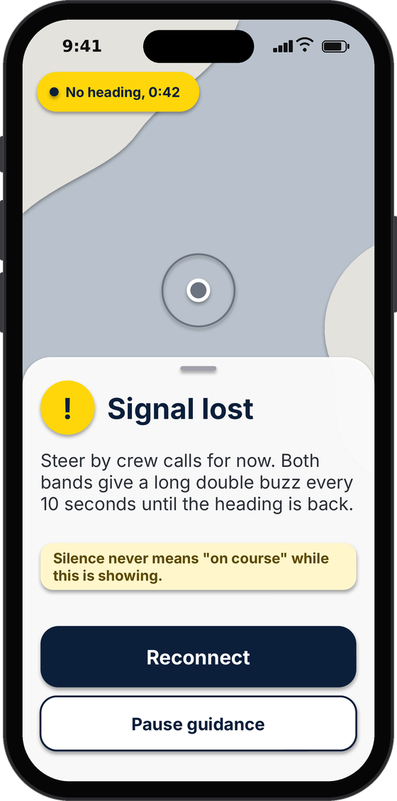
Branding
I designed five logo concepts, from a sailing-club boat to a crossed-out eye, before settling on a compass star around an eye: navigation and sight in one mark.
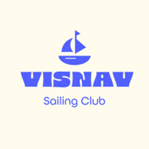
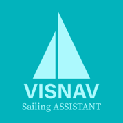
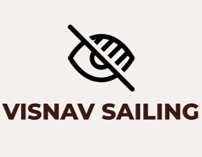
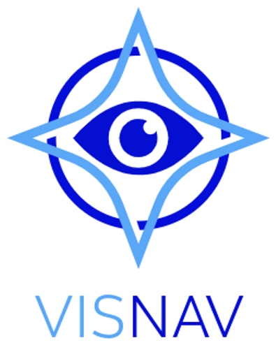
Posters
Posters to go up around Brighton Marina, encouraging sailors to join the course and help test VisNav on the water.
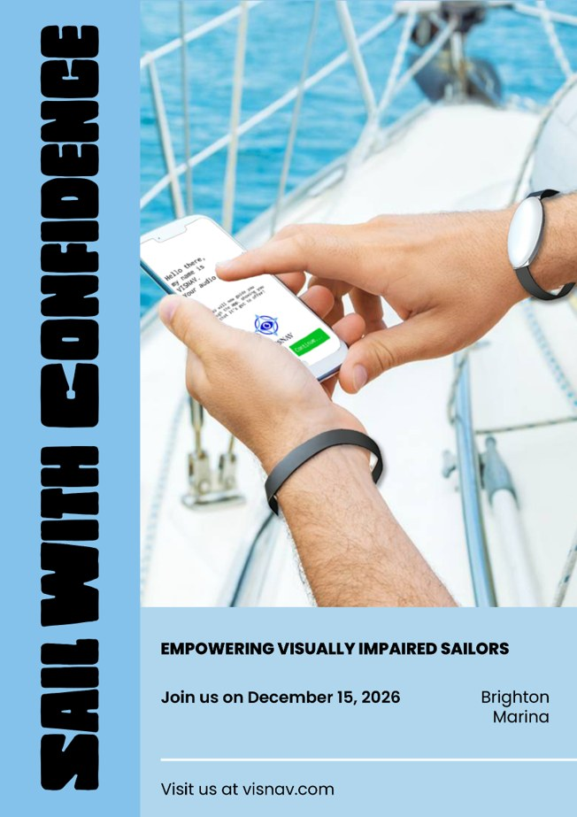
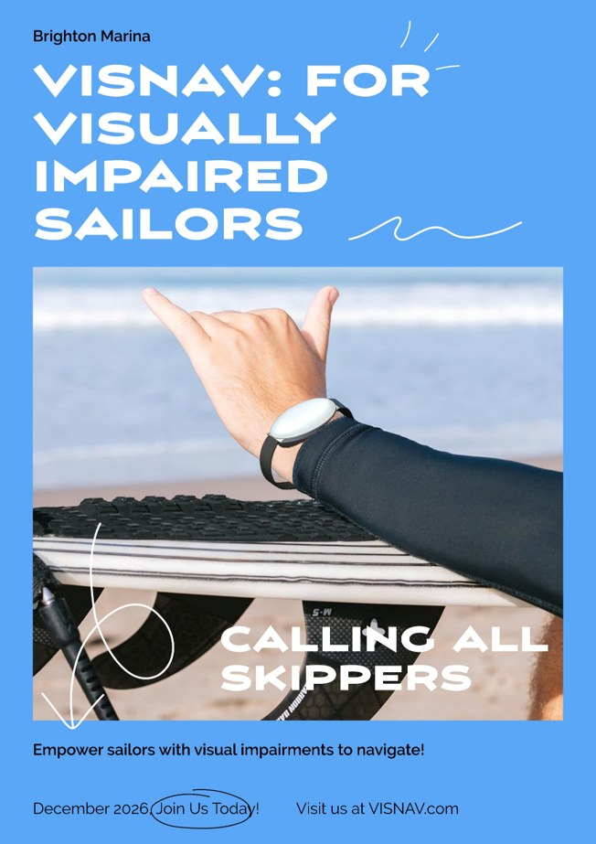
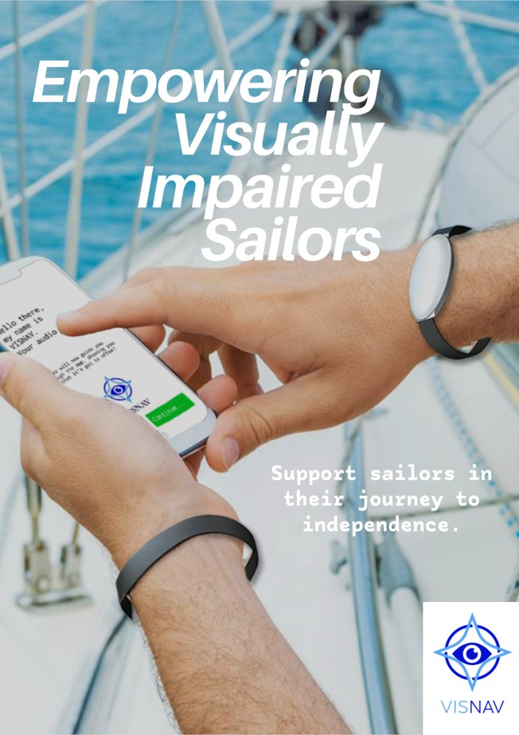